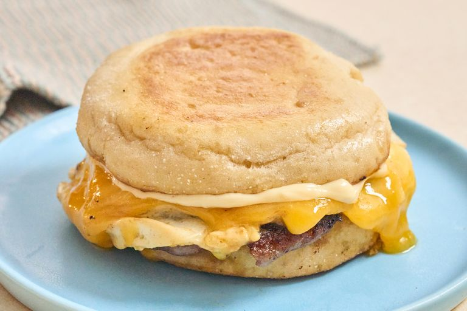

Home
Smashed Breakfast Burger

Description
This smashed breakfast burger brings the smash burger craze to your mornings. Savory sausage forms the burger, a toasted English muffin serves as the bun, and a perfectly fried egg and melty cheese bring it all together.
Ingredients
- 1/4 cup mayonnaise
- 2 teaspoons tabasco hot sauce, or to taste
- 1 pound breakfast sausage
- 6 English muffins, split in half
- 3 tablespoons butter, divided
- 6 large eggs, divided
- 1 teaspoon kosher salt
- 1/2 teaspoon ground black pepper
- 3/4 cup shredded Cheddar cheese, divided
Steps
- Stir mayonnaise and hot sauce together in a small bowl and set aside.
- Divide sausage into 6 portions. Heat a skillet over medium heat. Working one at a time, place a sausage portion down onto the hot surface (you can make several at a time if working with a larger griddle or flat top grill).
- Place the bottom half of an English muffin on top of the sausage. Press down on the muffin to smash the sausage down to extend slightly past the entire surface of the muffin. Cook undisturbed until browned, crisp around the edges, and cooked through, 5 to 6 minutes. Flip and move to the outer edge of the pan.
- Melt butter in the skillet. Crack eggs into the butter and season with salt and pepper. When whites are just beginning to set, flip eggs and top with cheese. Transfer egg to top of sausage patty. Place top half of muffin in skillet to toast.
- Remove from skillet; spread top English muffin half with mayonnaise mixture and place on top of the sandwich. Repeat with remaining sandwich ingredients.